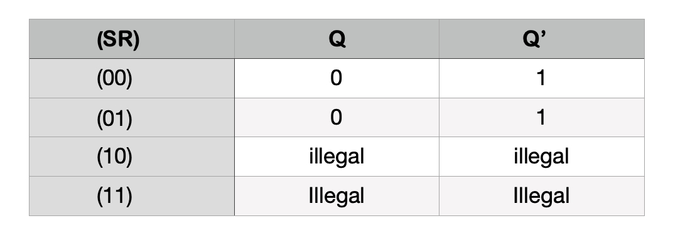

TITLE : Detection of both SA0 and SA1 faults in SR latch implemented with NOR gates.
AIM
THEORY
In digital electronics, a Latch is one kind of a logic circuit, and it is also known as a bistable-multivibrator. Because it has two stable states namely active high as well as active low. It works like a storage device by holding the data through a feedback lane. It stores 1-bit of data as long as the apparatus is activated. Once enable is declared then instantly latch can change the stored data. It constantly trials the inputs once enable signal is activated. The working of these circuits can be done in 2-states based on the enable signal being high or else low. When the latch circuit is the in an active high state, then both the i/ps are low. Similarly, when the latch circuit is then an active low state, then both the i/ps are high.
Different Types of Latches :
The latches can be classified into different types which include SR Latch, Gated S-R Latch, D latch, Gated D Latch, JK Latch, and T Latch.
SR Latch
An SR (Set/Reset) latch is an asynchronous apparatus, and it works separately for control signals by depending on the S-state & R-inputs. The SR-latch using 2-NOR gates with a cross loop connection is exhibited below. These latches can be built with NAND gates also; however, the two inputs are exchanged as well as cancelled. So it is called as SR’-latch.


Working of SR Latch :
While the R and S inputs are both low, feedback maintains the Q and Q outputs in a constant state, with Q the complement of Q. If S (Set) is pulsed high while R (Reset) is held low, then the Q output is forced high, and stays high when S returns to low; similarly, if R is pulsed high while S is held low, then the Q output is forced low, and stays low when R returns to low.
The R = S = 1 combination is called a restricted combination or a forbidden state because, as both NOR gates then output zeros, it breaks the logical equation Q = Q.
The combination is also inappropriate in circuits where both inputs may go low simultaneously (i.e. a transition from restricted to keep). The output would lock at either 1 or 0 depending on the propagation time relations between the gates (a race condition).

Advantages of Latches
1.The designing of latches is very flexible when we compare with FFs (flip-flops)
2.The latches utilize less power.
3.The performance of latch in the design of the high-speed circuit is quick because these are asynchronous within the design and there is no need of CLK signal.
4.The shape of the latch is very small and occupies less area
5.If the operation of latch based circuit is not finished in a set time, they borrow the necessary time from other to complete the operation
6.Latches give aggressive clocking when contrasted with flip-flop circuits.
Disadvantages of Latches
1. There will be a chance of affecting the race condition, so these are less expected.
2. When a latch is level sensitive, then there is a chance of meta-stability.
3.Analyzing the circuit is difficult due to the property of level sensitive.
4.The circuit can be tested by using an extra CAD program
Applications of Latches
1.Generally, latches are used to keep the conditions of the bits to encode binary numbers
2. Latches are single bit storage elements which are widely used in computing as well as data storage.
3.Latches are used in the circuits like power gating & clock as a storage device.
4.Data latches are used in synchronous two-phase systems for reducing the transit count.
5.SR latch is used for keypad button like in our old mobile phones, when we press the button, then that particular button sorted with ground else all button are at there max voltage, then system sends the information that a button is pressed and works accordingly.
To create one for ourselves, we can cross-couple two NOR gates. In other words, we connect them in a way such that the output of one feeds into the input of the other and vice versa.

Stuck at faults :
Now let us consider the case when S is Stuck-at-0 then no matter what input we enter it considers S as 0 i.e S=0. so from gate 2 logic relation between Q and Q' is satisfied.so when R becomes 1 eventually Q becomes Zero and when R becomes 0 then since SR = (0,0) is a memory state whatever the output present at previous state that is passed again.
Fig 1: S stuck at 0 (S=0)
if we consider the case S Stuck-at-1 then no matter what input we enter it considers S as 1 i.e S=1. so from gate 2 we can say that Q' becomes i.e Q'= 0 fo whole time which makes Q=1. but when R=1 then since SR = (11) is an illegal condition it becomes both Q and Q' 0 which is logically incorrect. other than that when R=0 then Q becomes 1 and Q' becomes 0.
Fig 2: S stuck at 1 (S=1)
if we consider the case R Stuck-at-0 then no matter what input we enter it considers R as 0 i.e R=0. so from gate 1 logic relation between Q and Q' is satisfied.so when S=1 then it makes Q = 1 and Q' = 0. and when S=0 then SR = (00) is a memory condition so what ever the previous output is it will be carried again.
Fig 3: R stuck at 0 (R=0)
if we consider the case R stuck-at-1 then no matter what input we enter it considers R as 1 i.e R=1. so from gate 1 we can say that Q becomes i.e Q = 0 fo whole time which makes Q'=1. but when S becomes 1 then since SR = (11) is an illegal consition it may change the value of Q'. other than that when S=0 then Q becomes 0 and Q' becomes 1.
Fig 4: R stuck at 1 (R=1)
if we consider A/Q' Stuck-at-1 then it makes Q'=1 and it logically represents Q=0. so nomatter what the input values of S and R are Q remains at 0 and Q' remains at 1 i.e QQ'=(01).
Fig 5: A/Q' stuck at 1 (Q'=1)
if we consider A/Q' stuck-at-0 then it makes Q'=0. and from gate 1 we can say that Q = R'. so when R is 0 then Q becomes 1 and when R is 1 then Q becomes 0.
Fig 6: A/Q' stuck at 0 (Q'=0)
PRETEST
PROCEDURE
Consider the SR latch given Below for our understanding
- Enter input values for S(Set) and R(Reset)in the corresponding boxes with either 0 or 1 as inputs.
- Now enter fault values (inside boxes colored with red with 0 or 1) for different positions (Sf, Rf,Qf, Q'f) to check for correponding faulty outputs.
- Click on the RUN button to check the results on the table.
- Faulty outputs which differ from normal outputs are mentioned with red colour as indication of different outputs.
- . The Table consists of Stuck at positions with their corresponding stuck at faults( 0 or 1 ), inputs, normal outputs , faulty outputs (actual output) when faults are present.
- Now repeat the procedure from the step 1 for different values of input.
- Use RESET button to clear the table.
POSTTEST
SIMULATION

INPUTS :
ENTER FAULTS :
Truth Table
| S R | Faults | Normal Output | Final/Faulty Output | ||
|---|---|---|---|---|---|
| Q | Q' | Q | Q' | ||
REFERENCES
- Ronald J. Tocci, Neal S. Widmer, Gregory L. Moss, "Digital Systems", Pearson, 10th ed. 2009
- This experiment is developed by Dr. Biswajit R. Bhowmik and his UG students : G. Jaya Ragha Charan , B.K Eswar Teja , P. Shiva Ram Charan , P. Venkata Sathwik , P. Abhinav Sai , Department of Computer Science and Engineering, National Institute of Technology Karnataka.